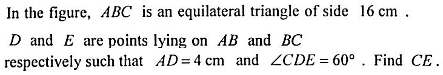

<!DOCTYPE html>
<html lang="en">
<head>
<meta charset="UTF-8">
<meta name="viewport" content="width=device-width, initial-scale=1.0">
<title>HKDSE 2017 P2 Q17 — Similar Triangles</title>
<script>
window.MathJax={
  tex:{inlineMath:[['$','$'],['\\(','\\)']],displayMath:[['$$','$$'],['\\[','\\]']]},
  svg:{fontCache:'global'}
};
</script>
<script src="https://cdn.jsdelivr.net/npm/mathjax@3/es5/tex-svg.js" async></script>
<style>
  :root{
    --bg:#eef3fb;
    --card:#ffffff;
    --ink:#1e2a44;
    --muted:#5a6b8c;
    --blue:#2563eb;
    --red:#e11d48;
    --green:#059669;
    --amber:#d97706;
    --purple:#7c3aed;
    --pink:#db2777;
    --teal:#0d9488;
  }
  *{box-sizing:border-box;}
  html,body{margin:0;padding:0;}
  body{
    font-family:"Segoe UI",system-ui,-apple-system,"Helvetica Neue",Arial,sans-serif;
    background:linear-gradient(160deg,#eef3fb 0%,#e6eefb 60%,#e9f0fc 100%);
    color:var(--ink);
    padding:14px;
    font-size:15px;
    line-height:1.55;
  }
  header.top{
    max-width:1500px;margin:0 auto 12px;
    background:linear-gradient(100deg,#1e3a8a,#2563eb 55%,#0ea5e9);
    color:#fff;border-radius:18px;padding:12px 18px;
    box-shadow:0 8px 24px rgba(30,58,138,.28);
    display:flex;flex-wrap:wrap;gap:6px 16px;align-items:baseline;
  }
  header.top h1{font-size:1.05rem;margin:0;font-weight:700;letter-spacing:.3px;}
  header.top .tag{font-size:.78rem;background:rgba(255,255,255,.2);
    padding:2px 10px;border-radius:999px;font-weight:600;}

  .split{
    display:grid;
    grid-template-columns:minmax(0,1fr) minmax(0,1fr);
    gap:12px;
    align-items:start;
    max-width:1500px;
    margin:0 auto;
  }
  @media(min-width:900px){
    .split{grid-template-columns:minmax(0,46%) minmax(0,54%);gap:18px;}
  }

  .panel{
    background:var(--card);
    border-radius:18px;
    box-shadow:0 6px 20px rgba(37,71,133,.12);
    padding:14px;
    border:1px solid #dbe6f7;
  }

  /* LEFT diagram sticky */
  .diagram{position:sticky;top:16px;max-height:calc(100vh - 2rem);overflow-y:auto;}

  canvas{width:100%;height:auto;display:block;border-radius:14px;background:#fbfdff;}

  .legend{display:flex;flex-wrap:wrap;gap:6px 12px;margin-top:10px;font-size:.76rem;color:var(--muted);}
  .legend span{display:inline-flex;align-items:center;gap:5px;}
  .dot{width:11px;height:11px;border-radius:50%;display:inline-block;}
  .bar{width:16px;height:4px;border-radius:2px;display:inline-block;}

  .ctl{display:flex;flex-wrap:wrap;gap:8px;margin-top:10px;}
  .ctl button{
    border:none;border-radius:10px;padding:7px 12px;font-size:.78rem;font-weight:600;
    background:#e8effc;color:#1e3a8a;cursor:pointer;transition:.15s;
  }
  .ctl button:hover{background:#d3e1fb;transform:translateY(-1px);}
  .ctl button.on{background:var(--blue);color:#fff;}

  h2.qhead{font-size:.95rem;margin:0 0 8px;color:var(--blue);letter-spacing:.4px;text-transform:uppercase;}
  .qtext{font-size:.95rem;background:#f6faff;border:1px solid #dbe6f7;border-radius:12px;padding:12px;margin:0 0 12px;}
  .qtext b{color:var(--red);}

  .choices{display:grid;grid-template-columns:repeat(2,minmax(0,1fr));gap:6px;margin-top:10px;font-size:.88rem;}
  .choices div{background:#fff;border:1px solid #e2eaf7;border-radius:9px;padding:5px 9px;font-weight:600;}
  .choices div.ans{background:#e8fbf1;border-color:#8fdcb6;color:#047857;}

  .step{
    border:1px solid #e2eaf7;border-left:5px solid #c7d7f0;
    border-radius:12px;padding:10px 12px;margin:10px 0;
    background:#fbfdff;transition:.25s;
  }
  .step.active{
    border-left-color:var(--blue);
    background:#f2f7ff;
    box-shadow:0 4px 16px rgba(37,99,235,.16);
    transform:translateX(2px);
  }
  .step .tag{
    display:inline-block;font-size:.7rem;font-weight:800;letter-spacing:.6px;
    color:#fff;background:var(--blue);border-radius:999px;padding:2px 10px;margin-bottom:6px;
  }
  .step[data-step="1"] .tag{background:var(--purple);}
  .step[data-step="2"] .tag{background:var(--amber);}
  .step[data-step="3"] .tag{background:var(--teal);}
  .step[data-step="4"] .tag{background:var(--pink);}
  .step[data-step="5"] .tag{background:var(--green);}
  .step[data-step="6"] .tag{background:var(--red);}
  .step .body{font-size:.92rem;}
  .hint{font-size:.82rem;color:var(--muted);background:#f4f8ff;border-radius:8px;padding:6px 9px;margin-top:6px;}

  .answer{
    margin-top:14px;border-radius:14px;padding:12px 14px;
    background:linear-gradient(110deg,#047857,#10b981);color:#fff;
    box-shadow:0 6px 18px rgba(5,150,105,.28);
  }
  .answer .lbl{font-size:.74rem;letter-spacing:1px;text-transform:uppercase;opacity:.9;}
  .answer .val{font-size:1.15rem;font-weight:800;}

  mjx-container{font-size:1em !important;}

  @media(max-width:520px){
    body{padding:8px;font-size:13.5px;}
    .panel{padding:9px;border-radius:14px;}
    header.top h1{font-size:.9rem;}
    .choices{grid-template-columns:1fr;}
    .step .body{font-size:.85rem;}
  }
</style>
<link rel="stylesheet" href="assets/extra.css">
</head>
<body>

<header class="top">
  <h1>HKDSE 2017 · Paper 2 · Q17</h1>
  <span class="tag">Geometry · Similar Triangles (AAA)</span>
  <span class="tag">Equilateral Triangle</span>
</header>

<div class="split">

  <!-- ================= LEFT : DIAGRAM ================= -->
  <section class="panel diagram">
    <canvas id="cv" width="620" height="620"></canvas>
    <div class="legend">
      <span><i class="bar" style="background:#2563eb"></i>AB, BC, CA (16 cm)</span>
      <span><i class="bar" style="background:#e11d48"></i>AD = 4 cm</span>
      <span><i class="bar" style="background:#7c3aed"></i>DE (drawn line)</span>
      <span><i class="bar" style="background:#0d9488"></i>CE (unknown)</span>
      <span><i class="dot" style="background:#d97706"></i>D</span>
      <span><i class="dot" style="background:#db2777"></i>E</span>
    </div>
    <div class="ctl">
      <button data-force="0" class="on">Overview</button>
      <button data-force="1">∠CDE = 60°</button>
      <button data-force="2">ΔACD</button>
      <button data-force="3">ΔBDE</button>
      <button data-force="4">Similar (AAA)</button>
      <button data-force="5">Solve CE</button>
    </div>
  </section>

  <!-- ================= RIGHT : QUESTION + SOLUTION ================= -->
  <section class="panel">
    <h2 class="qhead">Question</h2>
    <div class="qtext">
      In the figure, <b>ABC</b> is an equilateral triangle of side 16&nbsp;cm.
      <b>D</b> and <b>E</b> are points lying on <b>AB</b> and <b>BC</b> respectively such that
      <b>AD = 4&nbsp;cm</b> and <b>∠CDE = 60°</b>. Find <b>CE</b>.
      <div class="choices">
        <div>A. 9 cm</div>
        <div>B. 10 cm</div>
        <div>C. 12 cm</div>
        <div >D. 13 cm</div></div>
    </div>

    <figure style="margin:12px 0;text-align:center;"><figcaption style="font-size:.78rem;color:#64748b;margin-top:6px;">Figure (original exam diagram)</figcaption></figure>

    <div class="step" data-step="1">
      <span class="tag">STEP 1 · EQUILATERAL ANGLES &amp; SET UP</span>
      <div class="body">
        Since $ABC$ is equilateral,
        $$\angle BAC=\angle ABC=\angle BCA=60^\circ .$$
        Let $\angle ADC=x$.
        <div class="hint">Every angle of an equilateral triangle is $60^\circ$.</div>
      </div>
    </div>

    <div class="step" data-step="2">
      <span class="tag">STEP 2 · ANGLES IN ΔACD</span>
      
      <div class="rule"><span class="rule-name">Angle Sum of a Triangle</span>
  <span class="rule-math">\(\angle ACD=180^{\circ}-60^{\circ}-x\)</span>
<span class="rule-why">In \(\triangle ACD\) the angles are \(60^{\circ}\), \(x\) and the remaining angle \(120^{\circ}-x\).</span>
</div>
      <div class="body">
        In $\Delta ACD$ (∠ sum of Δ):
        $$\angle ACD = 180^\circ - \angle CAD - \angle ADC
        = 180^\circ - 60^\circ - x = 120^\circ - x .$$
      </div>
    </div>
        

    <div class="step" data-step="3">
      <span class="tag">STEP 3 · ANGLES AT D (STRAIGHT LINE)</span>
      
      <div class="rule"><span class="rule-name">Adjacent Angles on a Straight Line</span>
  <span class="rule-math">\(\angle BDE=180^{\circ}-\angle CDE-\angle ADC\)</span>
<span class="rule-why">Since \(A,D,B\) are collinear, \(180^{\circ}-60^{\circ}-x\) gives \(ngle BDE=120^{\circ}-x\).</span>
</div>
      <div class="body">
        Hmm — $A,\,D,\,B$ are collinear, so $\angle ADB=180^\circ$. Hence
        $$\angle BDE = 180^\circ - \angle CDE - \angle ADC
        = 180^\circ - 60^\circ - x = 120^\circ - x .$$
        Therefore
        $$\boxed{\angle ACD = \angle BDE = 120^\circ - x}.$$
        <div class="hint">Adjacent angles on a straight line.</div>
      </div>
    </div>
        

    <div class="step" data-step="4">
      <span class="tag">STEP 4 · ΔACD ~ ΔBDE (AAA)</span>
      
      <div class="rule"><span class="rule-name">Similar Triangles (AAA)</span>
  <span class="rule-math">\(\angle CAD=\angle DBE,\ \angle ACD=\angle BDE \Rightarrow \triangle ACD\sim\triangle BDE\)</span>
<span class="rule-why">Two pairs of equal angles are enough, so the corresponding sides are proportional.</span>
</div>
      <div class="body">
        Comparing $\Delta ACD$ and $\Delta BDE$:
        <ul style="margin:4px 0 4px 16px;padding:0;font-size:.9rem;">
          <li>$\angle CAD = 60^\circ = \angle DBE$ (equilateral Δ)</li>
          <li>$\angle ACD = \angle BDE$ (proved in Step 3)</li>
          <li>$\angle ADC = \angle BED$ (∠ sum of Δ)</li>
        </ul>
        $$\therefore \Delta ACD \sim \Delta BDE \quad (\text{AAA})$$
      </div>
    </div>
        

    <div class="step" data-step="5">
      <span class="tag">STEP 5 · RATIO OF CORRESPONDING SIDES</span>
      <div class="body">
        Corresponding sides of similar triangles are proportional:
        $$\frac{AD}{BE}=\frac{AC}{BD}.$$
        Now $AC=16$ cm, $AD=4$ cm, $AB=16$ cm so $BD=12$ cm,<br>
        and $BE=BC-CE=16-CE$.
        $$\frac{4}{16-CE}=\frac{16}{12}=\frac{4}{3}.$$
      </div>
    </div>

    <div class="step" data-step="6">
      <span class="tag">STEP 6 · SOLVE FOR CE</span>
      <div class="body">
        Cross-multiply:
        $$3\times 4 = 4\,(16-CE) \;\Rightarrow\; 3 = 16-CE$$
        $$CE = 16-3 = 13 \text{ cm}.$$
      </div>
    </div>

    <div class="answer">
      <div class="lbl">Answer</div>
      <div class="val">Option D &nbsp;·&nbsp; $CE = 13$ cm</div>
    </div>

      <div class="practice">
  <div class="p-head"><span class="p-badge">PRACTICE</span>Similar question — try it yourself</div>
  <div class="p-body">
    <div class="p-q"><p><strong>Question.</strong> In the figure, \(ABC\) is an equilateral triangle of side \(18\text{ cm}\). \(D\) and \(E\) are points lying on \(AB\) and \(BC\) respectively such that \(AD=6\text{ cm}\) and \(\angle CDE=60^{\circ}\). Find \(CE\).</p>
      <div class="p-fig" style="text-align:center;margin:10px 0">
<svg viewBox="0 0 200 185" width="210" height="195" role="img" aria-label="Equilateral triangle ABC of side 18 cm with D on AB where AD = 6 cm and E on BC such that angle CDE = 60 degrees">
<polygon points="25.0,165.0 178.0,165.0 101.5,32.5" stroke="#0f172a" stroke-width="1.6" fill="#eef4ff"/><line x1="76.0" y1="165.0" x2="101.5" y2="32.5" stroke="#0f172a" stroke-width="1.6" fill="none"/><line x1="76.0" y1="165.0" x2="161.0" y2="135.6" stroke="#0f172a" stroke-width="1.6" fill="none"/><line x1="67.1" y1="101.0" x2="59.4" y2="96.5" stroke="#0f172a" stroke-width="2"/><line x1="143.6" y1="96.5" x2="135.9" y2="101.0" stroke="#0f172a" stroke-width="2"/><path d="M 100.6 156.5 A 26.0 26.0 0 0 0 80.9 139.5" stroke="#0f172a" stroke-width="1.3" fill="none"/><text x="102.2" y="138.8" text-anchor="middle" font-family="Arial, Helvetica, sans-serif" font-size="12" fill="#0f172a">60°</text><text x="104.0" y="176.0" text-anchor="middle" font-family="Arial, Helvetica, sans-serif" font-size="12.5" fill="#0f172a">18 cm</text><text x="52.0" y="156.0" text-anchor="middle" font-family="Arial, Helvetica, sans-serif" font-size="12.5" fill="#0f172a">6 cm</text><circle cx="25.0" cy="165.0" r="2.3" fill="#0f172a"/><text x="17.0" y="177.0" text-anchor="middle" font-family="Arial, Helvetica, sans-serif" font-size="12.5" fill="#0f172a">A</text><circle cx="178.0" cy="165.0" r="2.3" fill="#0f172a"/><text x="187.0" y="177.0" text-anchor="middle" font-family="Arial, Helvetica, sans-serif" font-size="12.5" fill="#0f172a">B</text><circle cx="101.5" cy="32.5" r="2.3" fill="#0f172a"/><text x="101.5" y="27.5" text-anchor="middle" font-family="Arial, Helvetica, sans-serif" font-size="12.5" fill="#0f172a">C</text><circle cx="76.0" cy="165.0" r="2.3" fill="#0f172a"/><text x="78.0" y="184.0" text-anchor="middle" font-family="Arial, Helvetica, sans-serif" font-size="12.5" fill="#0f172a">D</text><circle cx="161.0" cy="135.6" r="2.3" fill="#0f172a"/><text x="172.0" y="147.6" text-anchor="middle" font-family="Arial, Helvetica, sans-serif" font-size="12.5" fill="#0f172a">E</text>
</svg></div></div>
    <details>
      <summary>Show the worked solution</summary>
      <div class="p-sol"><div class="p-step"><strong>Step 1.</strong> Since \(ABC\) is equilateral, \(\angle BAC=\angle ABC=\angle BCA=60^{\circ}\), and \(BD=18-6=12\text{ cm}\).</div><div class="p-step"><strong>Step 2.</strong> Let \(\angle ADC=x\). In \(\triangle ACD\): \(\angle ACD=120^{\circ}-x\);<br> on the straight line \(ADB\): \(\angle BDE=120^{\circ}-x\).</div><div class="p-step"><strong>Step 3.</strong> Also \(\angle CAD=60^{\circ}=\angle DBE\), so \(\triangle ACD\sim\triangle BDE\) (AAA).</div><div class="p-step"><strong>Step 4.</strong> Corresponding sides: \(\dfrac{AD}{BE}=\dfrac{AC}{BD}\), i.e. \(\dfrac{6}{18-CE}=\dfrac{18}{12}=\dfrac{3}{2}\).</div><div class="p-step"><strong>Step 5.</strong> Cross-multiply: \(12=3(18-CE)\), so \(18-CE=4\) and \(CE=14\text{ cm}\).</div><div class="p-ans">Answer: \(CE=14\text{ cm}\)</div></div>
    </details>
  </div>
</div>
  </section>
</div>

<script>
/* ---------- Geometry model ----------
   Equilateral ABC, side s = 16 (cm).
   D on AB with AD = 4  →  AD/AB = 1/4.
   ∠CDE = 60° fixes E on BC, giving CE = 13 cm.
   We compute E exactly from the geometry.
--------------------------------------*/
const S = 16, AD = 4;

/* Math coordinates (y up):
   A = (0,0), B = (16,0), C = (8, 8√3) */
const Cx = 8, Cy = 8*Math.sqrt(3);
const A = {x:0, y:0};
const B = {x:S, y:0};
const C = {x:Cx, y:Cy};
const D = {x:AD, y:0};

/* Find E on BC such that ∠CDE = 60°.
   Place E = B + t(C - B).
   Solve (D→C)·(D→E) = |DC||DE|cos60 with proper direction. */
function findE(){
  const dir = {x:(C.x-B.x), y:(C.y-B.y)};        // along BC
  const u = {x:(C.x-D.x), y:(C.y-D.y)};          // D→C
  const lu = Math.hypot(u.x,u.y);
  let best=null, bestErr=1e9;
  for(let t=0;t<=1;t+=0.00005){
    const E={x:B.x+t*dir.x, y:B.y+t*dir.y};
    const v={x:E.x-D.x, y:E.y-D.y};
    const lv=Math.hypot(v.x,v.y);
    if(lv<1e-9) continue;
    let cosang=(u.x*v.x+u.y*v.y)/(lu*lv);
    cosang=Math.max(-1,Math.min(1,cosang));
    const ang=Math.acos(cosang)*180/Math.PI;
    const err=Math.abs(ang-60);
    if(err<bestErr){bestErr=err;best=E;}
  }
  return best;
}
const E = findE();

/* CM length from E to C (should be ≈13) */
const CE_cm = Math.hypot(E.x-C.x, E.y-C.y);

/* ---------- Canvas setup ---------- */
const cv=document.getElementById('cv');
const ctx=cv.getContext('2d');
let W=cv.width, H=cv.height;

function fit(){
  const dpr=window.devicePixelRatio||1;
  const rect=cv.getBoundingClientRect();
  const w=Math.max(280,Math.round(rect.width));
  const h=w; // square
  cv.width=w*dpr; cv.height=h*dpr;
  cv.style.height=h+'px';
  ctx.setTransform(dpr,0,0,dpr,0,0);
  W=w; H=h;
  draw();
}

/* World → screen */
let pad=0.12;
function makeMap(){
  // world bounds
  const minX=-1.5, maxX=S+1.5, minY=-1.5, maxY=Cy+1.5;
  const ww=maxX-minX, hh=maxY-minY;
  const sx=(W*(1-2*pad))/ww, sy=(H*(1-2*pad))/hh;
  const sc=Math.min(sx,sy);
  const ox=(W-ww*sc)/2 - minX*sc;
  const oy=(H-hh*sc)/2 + maxY*sc;   // flip y
  return (p)=>({x:ox+p.x*sc, y:oy-p.y*sc});
}
let MAP=makeMap();

function line(a,b,color,width,dash){
  ctx.save();
  ctx.setLineDash(dash||[]);
  ctx.strokeStyle=color; ctx.lineWidth=width;
  ctx.lineCap='round'; ctx.lineJoin='round';
  ctx.beginPath();
  const p=MAP(a), q=MAP(b);
  ctx.moveTo(p.x,p.y); ctx.lineTo(q.x,q.y);
  ctx.stroke();
  ctx.restore();
}
function label(p,txt,color,dx,dy,size){
  const q=MAP(p);
  ctx.save();
  ctx.font=`700 ${size||16}px "Segoe UI",Arial,sans-serif`;
  ctx.fillStyle=color;
  ctx.textAlign='center'; ctx.textBaseline='middle';
  ctx.strokeStyle='rgba(255,255,255,.9)'; ctx.lineWidth=3.5;
  ctx.strokeText(txt,q.x+(dx||0), q.y+(dy||0));
  ctx.fillText(txt,q.x+(dx||0), q.y+(dy||0));
  ctx.restore();
}
function dot(p,color,r){
  const q=MAP(p);
  ctx.save();
  ctx.beginPath(); ctx.arc(q.x,q.y,r||6,0,Math.PI*2);
  ctx.fillStyle=color; ctx.fill();
  ctx.strokeStyle='#fff'; ctx.lineWidth=2; ctx.stroke();
  ctx.restore();
}
function angleArc(V,P,Q,color,r,labelTxt){
  const p=MAP(V), a=MAP(P), b=MAP(Q);
  const a1=Math.atan2(a.y-p.y,a.x-p.x);
  let a2=Math.atan2(b.y-p.y,b.x-p.x);
  let d=a2-a1;
  while(d>Math.PI) d-=2*Math.PI;
  while(d<-Math.PI) d+=2*Math.PI;
  ctx.save();
  ctx.strokeStyle=color; ctx.lineWidth=2.5;
  ctx.beginPath();
  ctx.arc(p.x,p.y,r,a1,a1+d,d<0);
  ctx.stroke();
  if(labelTxt){
    const mid=a1+d/2;
    ctx.font='700 12px "Segoe UI",Arial,sans-serif';
    ctx.fillStyle=color; ctx.textAlign='center'; ctx.textBaseline='middle';
    ctx.strokeStyle='rgba(255,255,255,.9)'; ctx.lineWidth=3;
    const tx=p.x+Math.cos(mid)*(r+15), ty=p.y+Math.sin(mid)*(r+15);
    ctx.strokeText(labelTxt,tx,ty); ctx.fillText(labelTxt,tx,ty);
  }
  ctx.restore();
}
function rightAngle(V,P,Q,color,size){
  const p=MAP(V), a=MAP(P), b=MAP(Q);
  const u={x:a.x-p.x,y:a.y-p.y}, v={x:b.x-p.x,y:b.y-p.y};
  const lu=Math.hypot(u.x,u.y), lv=Math.hypot(v.x,v.y);
  if(!lu||!lv) return;
  const s=size||12;
  const ux={x:u.x/lu*s,y:u.y/lu*s}, vx={x:v.x/lv*s,y:v.y/lv*s};
  ctx.save();
  ctx.strokeStyle=color; ctx.lineWidth=2;
  ctx.beginPath();
  ctx.moveTo(p.x+ux.x,p.y+ux.y);
  ctx.lineTo(p.x+ux.x+vx.x,p.y+ux.y+vx.y);
  ctx.lineTo(p.x+vx.x,p.y+vx.y);
  ctx.stroke();
  ctx.restore();
}
function midLabel(a,b,txt,color,off){
  const m={x:(a.x+b.x)/2,y:(a.y+b.y)/2};
  const q=MAP(m);
  ctx.save();
  ctx.font='700 13px "Segoe UI",Arial,sans-serif';
  ctx.fillStyle=color; ctx.textAlign='center'; ctx.textBaseline='middle';
  ctx.strokeStyle='rgba(255,255,255,.9)'; ctx.lineWidth=3.5;
  ctx.strokeText(txt,q.x,q.y+(off||0));
  ctx.fillText(txt,q.x,q.y+(off||0));
  ctx.restore();
}
/* Fill a triangle with translucent colour */
function tri(a,b,c,color){
  ctx.save();
  const p=MAP(a),q=MAP(b),r=MAP(c);
  ctx.beginPath(); ctx.moveTo(p.x,p.y); ctx.lineTo(q.x,q.y); ctx.lineTo(r.x,r.y); ctx.closePath();
  ctx.fillStyle=color; ctx.fill();
  ctx.restore();
}
/* Dashed highlight for a segment */
function highlight(a,b,color){
  ctx.save();
  ctx.setLineDash([7,6]);
  ctx.strokeStyle=color; ctx.lineWidth=7; ctx.globalAlpha=.35;
  ctx.beginPath();
  const p=MAP(a),q=MAP(b);
  ctx.moveTo(p.x,p.y); ctx.lineTo(q.x,q.y);
  ctx.stroke();
  ctx.restore();
}

/* ---------- Drawing ---------- */
let mode=0;

function draw(){
  ctx.clearRect(0,0,W,H);
  MAP=makeMap();

  // soft background
  ctx.save();
  const g=ctx.createLinearGradient(0,0,W,H);
  g.addColorStop(0,'#fbfdff'); g.addColorStop(1,'#eef5ff');
  ctx.fillStyle=g; ctx.fillRect(0,0,W,H);
  ctx.restore();

  // grid
  ctx.save();
  ctx.strokeStyle='#e6eefb'; ctx.lineWidth=1;
  for(let i=0;i<=W;i+=Math.max(24,W/18)){ctx.beginPath();ctx.moveTo(i,0);ctx.lineTo(i,H);ctx.stroke();}
  for(let j=0;j<=H;j+=Math.max(24,H/18)){ctx.beginPath();ctx.moveTo(0,j);ctx.lineTo(W,j);ctx.stroke();}
  ctx.restore();

  /* --- triangle fills depending on mode --- */
  if(mode===2||mode===5){
    tri(A,C,D,'rgba(124,58,237,.18)');           // ΔACD
  }
  if(mode===3||mode===5){
    tri(B,D,E,'rgba(217,119,6,.18)');            // ΔBDE
  }
  if(mode===4){
    tri(A,C,D,'rgba(124,58,237,.20)');
    tri(B,D,E,'rgba(217,119,6,.20)');
  }

  /* --- main triangle edges --- */
  const baseW = 3.4;
  line(A,B,'#2563eb',baseW);
  line(B,C,'#2563eb',baseW);
  line(C,A,'#2563eb',baseW);

  /* --- AD emphasized (red) --- */
  line(A,D,'#e11d48',5);

  /* --- DE (purple) --- */
  line(D,E,'#7c3aed',mode>=3?4.2:3);

  /* --- DC always shown --- */
  line(D,C,'#e11d48',mode>=2?4.2:3);

  /* --- CE (teal, dashed highlight when relevant) --- */
  line(C,E,'#0d9488',mode>=5?5:3.2, mode>=5?[9,6]:[]);

  /* --- highlights --- */
  if(mode===5){ highlight(A,C,'#2563eb'); }

  /* --- right-angle marker at right side not needed; mark AD ticks --- */
  // AD segment tick marks (4 cm vs 12 cm DB)
  (function tick(a,b,count,color){
    const p=MAP(a), q=MAP(b);
    const mx=(p.x+q.x)/2, my=(p.y+q.y)/2;
    const ang=Math.atan2(q.y-p.y,q.x-p.x)+Math.PI/2;
    ctx.save(); ctx.strokeStyle=color; ctx.lineWidth=2.4;
    for(let i=0;i<count;i++){
      const off=(i-(count-1)/2)*6;
      const cx=mx+Math.cos(ang)*off, cy=my+Math.sin(ang)*off;
      ctx.beginPath();
      ctx.moveTo(cx-Math.cos(ang-Math.PI/2)*5, cy);
      ctx.lineTo(cx+Math.cos(ang-Math.PI/2)*5, cy+Math.sin(ang)*0);
      ctx.stroke();
    }
    ctx.restore();
  })(A,D,1,'#e11d48');

  /* --- angle arcs --- */
  angleArc(A,B,C,'#7c3aed',34,'60°');          // ∠BAC
  angleArc(B,A,C,'#7c3aed',34,'60°');          // ∠ABC
  angleArc(C,A,B,'#7c3aed',34,'60°');          // ∠BCA

  // ∠CDE = 60° glare
  if(mode>=1){
    angleArc(D,C,E,'#d97706',30,'60°');
  } else {
    angleArc(D,C,E,'#d97706',26,);
  }

  // ∠ADC = x
  if(mode>=2){
    angleArc(D,A,C,'#e11d48',28,'x');
  }
  // ∠ACD
  if(mode>=2){
    angleArc(C,A,D,'#e11d48',24);
  }
  // ∠BDE
  if(mode>=3){
    angleArc(D,B,E,'#059669',26);
  }

  /* --- points --- */
  dot(A,'#1e3a8a',6);
  dot(B,'#1e3a8a',6);
  dot(C,'#1e3a8a',6);
  dot(D,'#d97706',7);
  dot(E,'#db2777',7);

  /* --- labels --- */
  label(A,'A','#1e3a8a',-16,16,19);
  label(B,'B','#1e3a8a',16,16,19);
  label(C,'C','#1e3a8a',0,-18,19);
  label(D,'D','#d97706',-4,22,19);
  label(E,'E','#db2777',20,-6,19);

  /* --- side length annotations --- */
  if(mode===0 || mode===1){
    midLabel(A,B,'16 cm','#2563eb',26);
    midLabel(B,C,'16 cm','#2563eb',0);
    midLabel(C,A,'16 cm','#2563eb',0);
  }
  if(mode>=1){
    midLabel(A,D,'4 cm','#e11d48',22);
  }
  if(mode>=5){
    midLabel(C,E,'CE = 13 cm','#0d9488',-6);
  }
  if(mode===5){
    midLabel(B,D,'12 cm','#2563eb',22);
  }

  /* --- mode caption --- */
  const captions={
    0:'Figure: equilateral ABC (side 16 cm), AD = 4 cm, ∠CDE = 60°',
    1:'Given: ∠CDE = 60°',
    2:'ΔACD: ∠ACD = 180° − 60° − x = 120° − x',
    3:'∠BDE = 180° − 60° − x = 120° − x   ⇒   ∠ACD = ∠BDE',
    4:'ΔACD ~ ΔBDE  (AAA): ∠CAD = ∠DBE, ∠ACD = ∠BDE, ∠ADC = ∠BED',
    5:'AD/BE = AC/BD  →  4/(16−CE) = 16/12  →  CE = 13 cm'
  };
  ctx.save();
  ctx.font='600 12.5px "Segoe UI",Arial,sans-serif';
  ctx.fillStyle='#1e3a8a';
  ctx.textAlign='left'; ctx.textBaseline='top';
  const lines=wrapText(captions[mode], W-24, ctx);
  let ty=10;
  lines.forEach(l=>{ ctx.fillText(l,12,ty); ty+=17; });
  ctx.restore();
}

function wrapText(text,maxW,ctx){
  const words=text.split(' ');
  const out=[]; let cur='';
  words.forEach(w=>{
    const t=cur?cur+' '+w:w;
    if(ctx.measureText(t).width>maxW && cur){ out.push(cur); cur=w; }
    else cur=t;
  });
  if(cur) out.push(cur);
  return out;
}

/* ---------- Scroll sync ---------- */
const steps=Array.from(document.querySelectorAll('.step'));
const obs=new IntersectionObserver((es)=>{
  es.forEach(e=>{
    if(e.isIntersecting){
      const m=+e.target.dataset.step;
      mode=m;
      steps.forEach(st=>st.classList.toggle('active',st===e.target));
      draw();
      syncButtons(m);
    }
  });
},{rootMargin:'-15% 0px -55% 0px',threshold:0});
steps.forEach(st=>obs.observe(st));

/* ---------- Buttons ---------- */
const btns=Array.from(document.querySelectorAll('.ctl button'));
btns.forEach(b=>{
  b.addEventListener('click',()=>{
    const m=+b.dataset.force;
    mode=m; draw(); syncButtons(m);
    // scroll corresponding step into view
    const target=document.querySelector(`.step[data-step="${Math.max(1,m)}"]`);
    if(target) target.scrollIntoView({behavior:'smooth',block:'center'});
  });
});
function syncButtons(m){
  btns.forEach(b=>b.classList.toggle('on',(+b.dataset.force)===m));
}

/* ---------- Init ---------- */
window.addEventListener('resize',()=>{ MAP=makeMap(); fit(); });
window.addEventListener('load',()=>{ MAP=makeMap(); fit();
  if(window.MathJax && MathJax.typesetPromise){ MathJax.typesetPromise(); }
});
fit();
</script>
<!-- question-pager -->
<nav class="qnav" aria-label="Question navigation">
  <a class="qnav__prev" href="2017_P2_Q16.html">← Previous Question</a>
  <a class="qnav__mid" href="index.html#y2017">Contents</a>
  <a class="qnav__next" href="2017_P2_Q18.html">Next Question →</a>
</nav>
</body>
</html>